LOWI instrument
Browserbeelden van de implementatie. Rapport en meetmethode. Desktop 1440 ? 900, mobiel 390 ? 844. De adaptieve effecten blijven actief tijdens deze controles. In de hoofdstukscreenshotrun werden bloom en DOF wegens lage framerate uitgeschakeld; in de afzonderlijke scrollmeting bleef DOF aan. Dit zijn verschillende runs, geen identieke effectinstellingen.
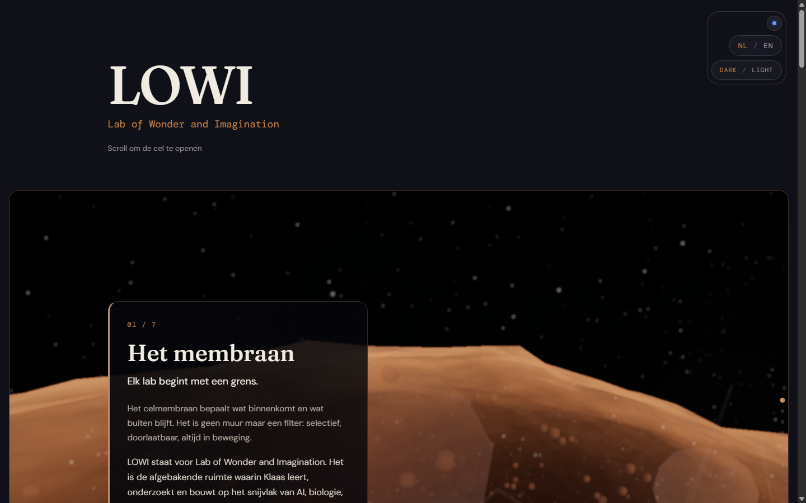
Intro: macro-oppervlak ? naar boven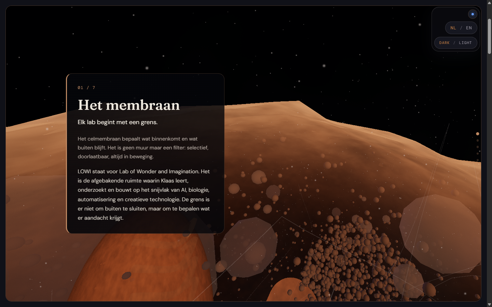
1. Grens ? naar boven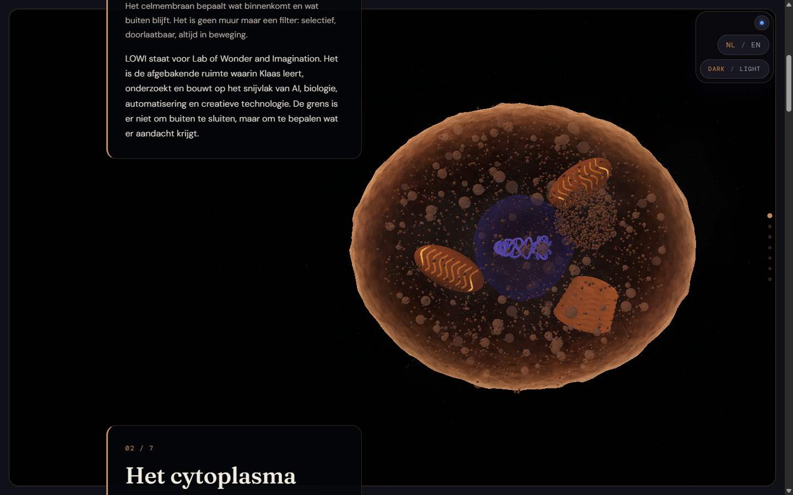
Onthulling onderweg naar hoofdstuk 2 ? naar boven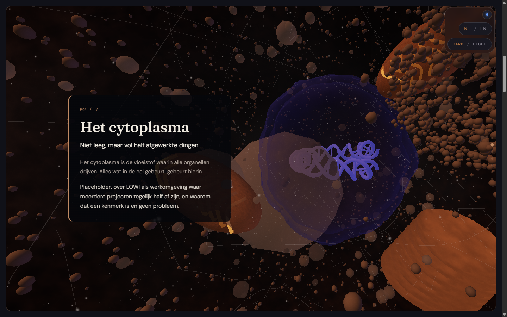
2. Werkvloer ? naar boven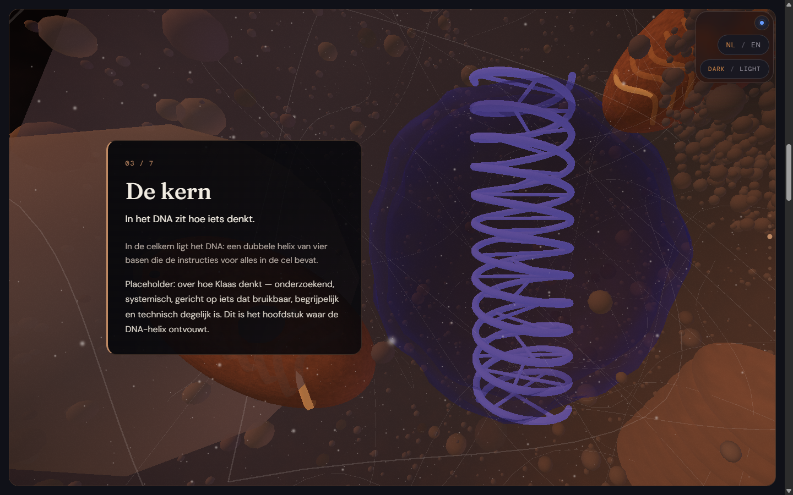
3. Code ? naar boven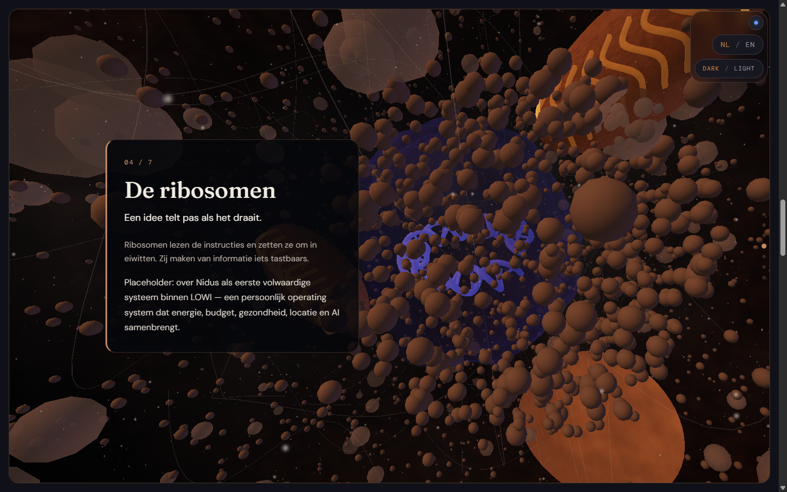
4. Bouwen ? naar boven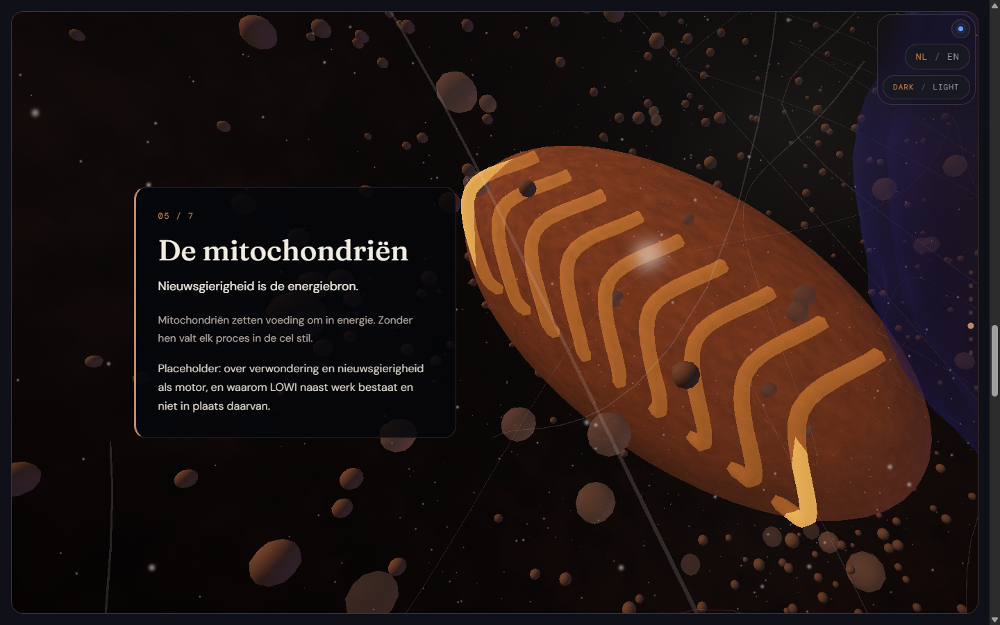
5. Brandstof ? naar boven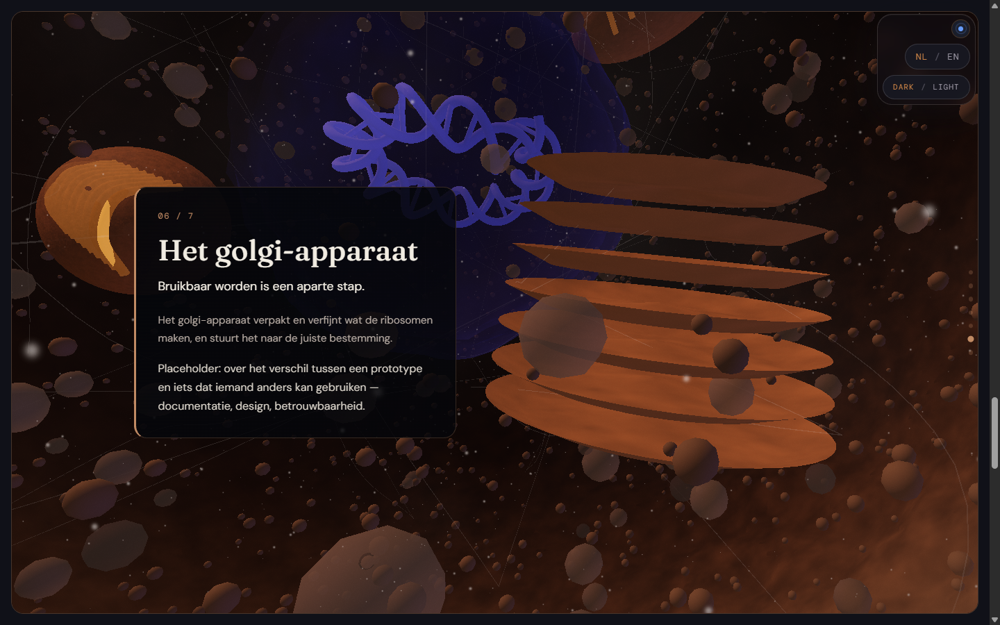
6. Verfijnen ? naar boven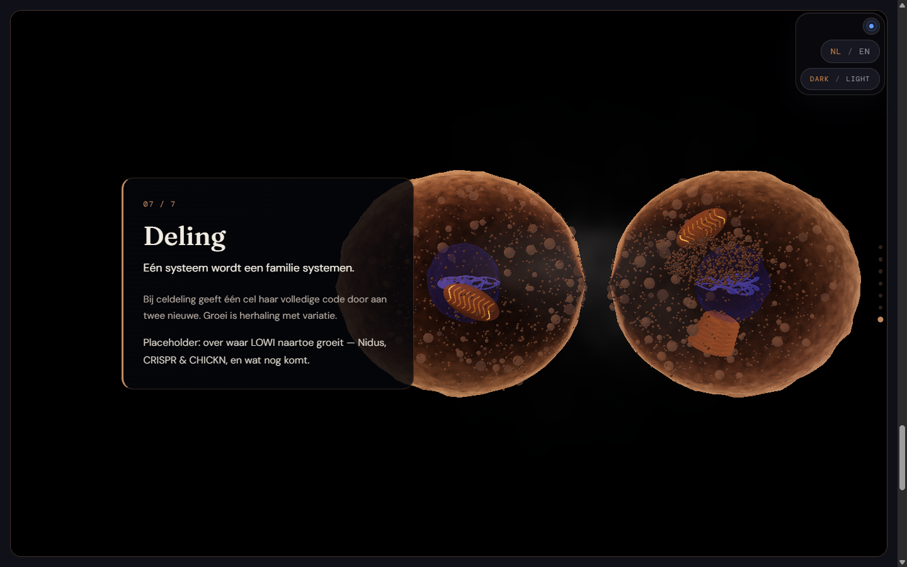
7. Groei ? naar boven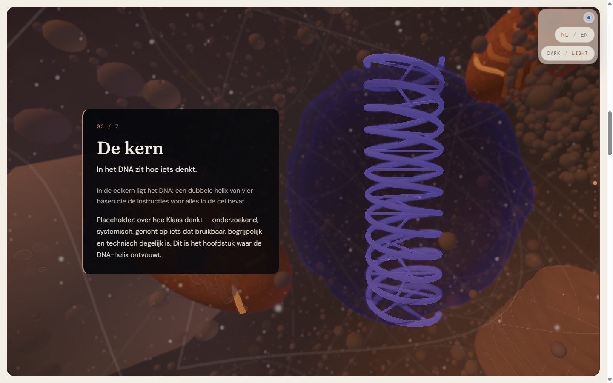
Koude lading in lichte modus ? naar boven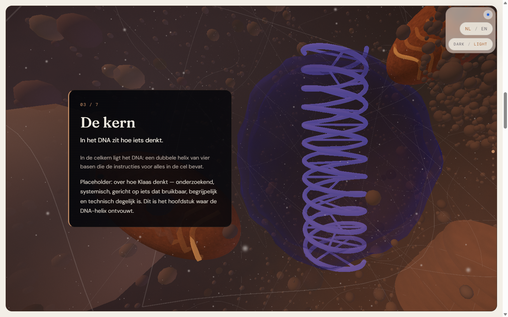
Themawissel tijdens hoofdstuk 3 ? naar boven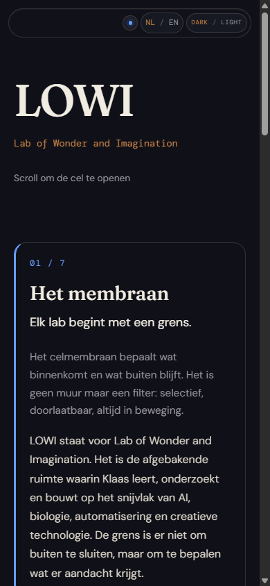
Artikel op mobiel ? naar boven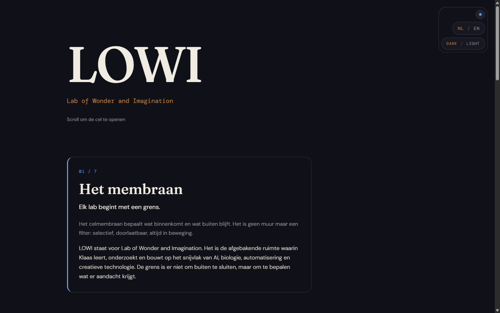
Reduced motion ? naar bovenArtikel zonder WebGL ? naar boven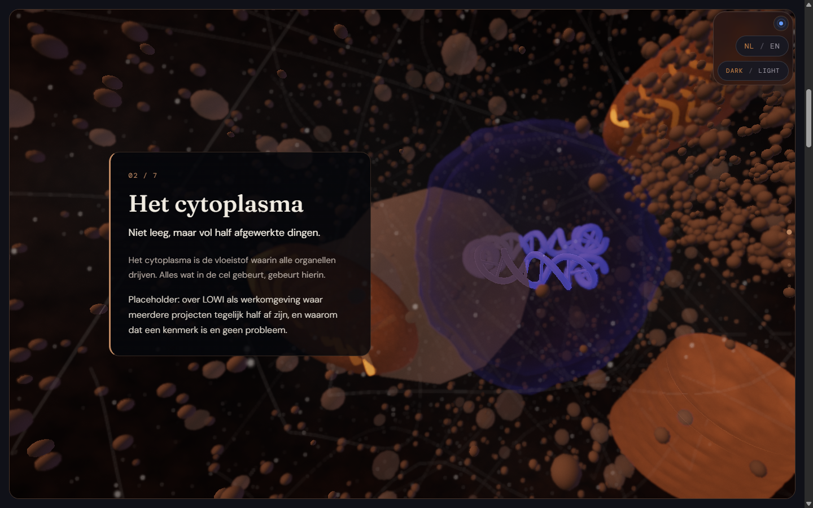
Medium: alle lagen ? naar boven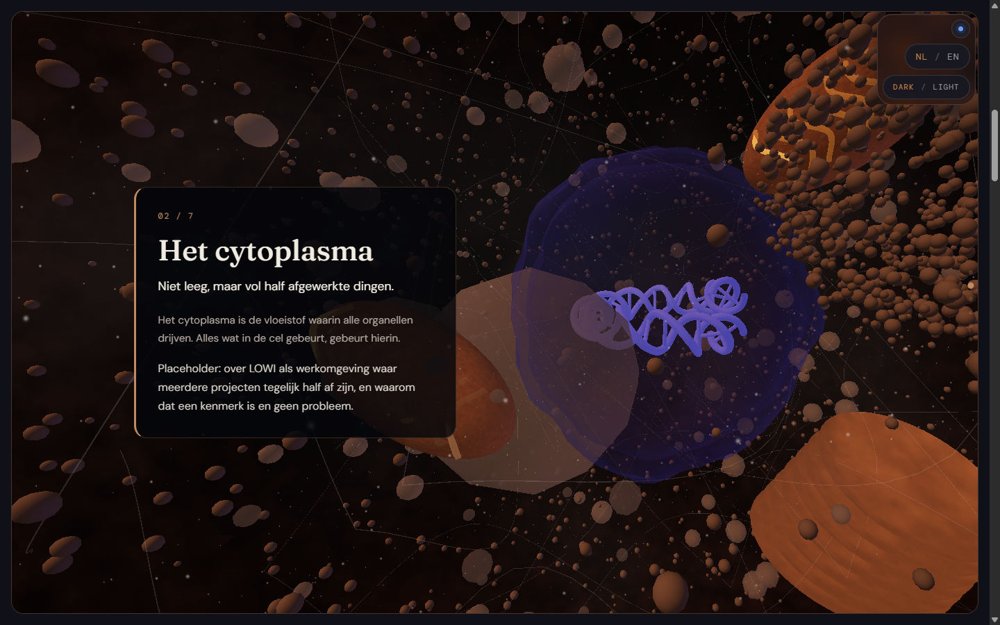
Medium zonder fog ? naar boven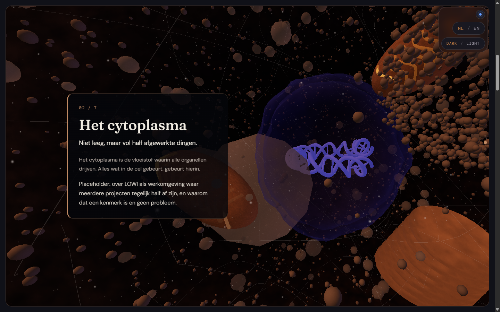
Medium zonder ruislagen ? naar boven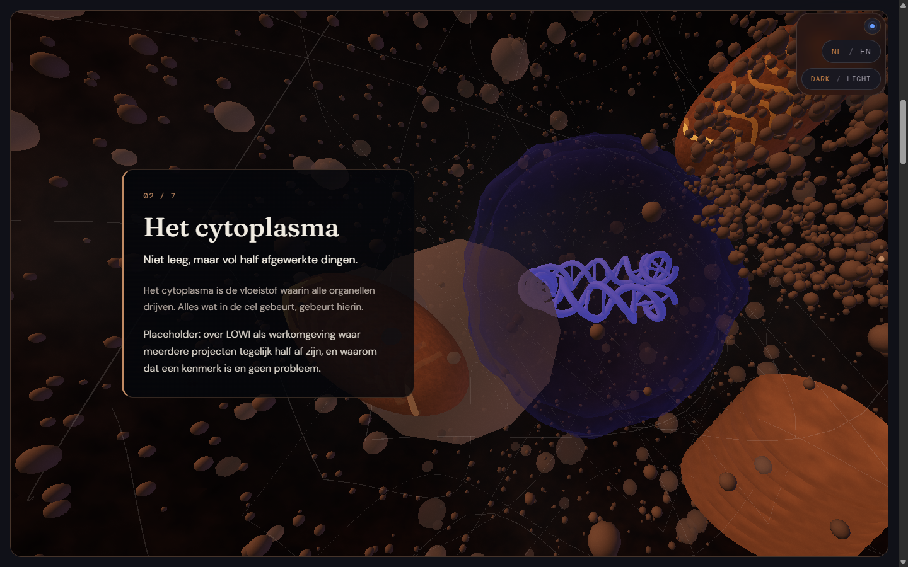
Medium zonder fijne deeltjes ? naar boven